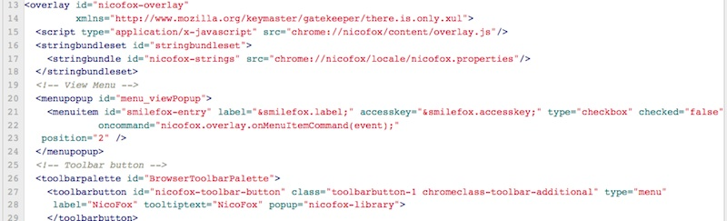
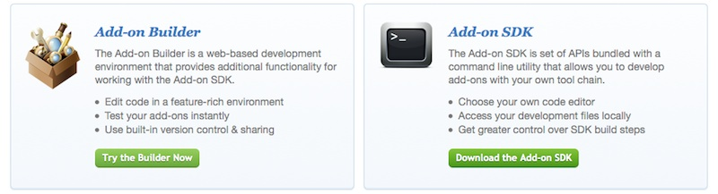
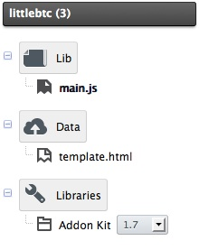

Add-on Workshop
Firefox + Addon = Awesome
- 可以徹底改變瀏覽器的行為
- 調整更自主的使用體驗
- 85% 的 Firefox 使用者至少有一個附加元件！
擴充套件的開發
- 傳統 XUL 擴充套件
- Add-on SDK 擴充套件
傳統 XUL 擴充套件
- 以 XUL / XBL 來撰寫介面加上 JavaScript
- 擁有強大的介面和內部變動能力
- 但需要不短的學習時間

Add-on SDK
- 是對 Add-on 開發所特別製作的框架
- 以 HTML / CSS / JavaScript 來進行開發
- 方便的 API 和良好的安全規劃
開發 Add-on SDK 套件的方式
- 線上使用 Add-on Builder
快、方便、立即試用
- 下載 Add-on SDK
本機編輯、單元測試、更多控制權

今天的 Workshop 將把重點放在以 Add-on Builder 做出簡單的套件。
Add-on SDK 的內容
- 負責各種功能的高階 API
- 負責瀏覽器內部協調的低階 API
- 將套件進行包裝、測試的工具
高階 API
- 和瀏覽器進行互動
- 執行一段程式修改載入的網頁
- 開一個背景頁面跑東西
低階 API
- 套件所需的基本工具
- 實現高階 API 的功能
- 使用 Firefox 底層的功能
模組化
- Add-on SDK 遵循 CommonJS 模組規範
- 內建 API 分為高階的
addon-kit 和低階的 api-utils 兩個 Package
- 套件本身就是一個 Package
- 組態寫在
package.json
模組：使用和讓人使用
- 以
require() 來取用模組
exports 物件中包含所有欲讓其他模組使用的內容

Add-on SDK 套件的組成

package.json- 模組放在
lib/
以 main 模組作為程式的進入點
- 模組以外的其他內容放在
data/（下述）
data
- 用於放置非模組的內容
- Content Script、HTML、CSS 以及多媒體
- 可用
self API 去取得其網址：
require(“self”).data.url(“abc.htm”)
Script 的執行位置
- 可以執行在 Firefox 的介面或主程式裡
稱之為 Add-on / Chrome Scope
可以取用 Add-on SDK 的 API
- 可以執行在網頁或小元件裡面
稱之為 Content Scope
可以取用網頁中的 DOM 和 HTML5 API
- 基於安全考量，彼此之間只能透過指定的方式通訊
在 Add-on SDK 裡，很多 UI 元件都是一個可執行網頁的小框架，因此兩種位置的通訊十分常見！
互通有無
- 以
port.emit 送出訊息
port.emit("myEvent", myEventPayload);
- 以
port.on 接收訊息
port.on("myEvent", function handle(payload) {});
- 訊息必須要是可以被轉為 JSON 的內容

附加元件列按鈕
- 使用
widget 增加按鈕。
- 會在附加元件列內嵌一個小框架放東西。
widget 的參數
panel：搭配 panel API 在點擊後顯示一個面板。contentURL：可以是網路上或 data 裡的東西。contentScript / contentScriptFile：
透過 Content Script 自訂載入、左右點擊等事件時的反應。
Widget 端的接口在 widget.port
Content Script 端的接口在 self.port- 參考 官方文件簡介。
UI 元素的模組都可以用 onXXX 參數
或 .on('xxx', function) 聆聽事件。
面板
- 浮在瀏覽器視窗上的方塊。
- 會在附加元件列內嵌一個小框架放網頁。
- 一樣可以載入網頁或
data/ 裡的東西並放置 Content Script。
- 官方文件
Popup Tutorial

Page Worker
- 跟 Panel 很像，可是是完全隱藏起來的。
- 可以做一些長時間的背景作業。
- 或著當你需要 DOM 或 HTML5 的時候。
- 官方文件
右鍵選單
- 使用
context 決定在何時出現選單。
- 在
contentScript 裡用聆聽點擊事件，在事件中讀取網頁的 DOM。只能單向提交訊息給 Addon。
- 官方文件
page-mod ≈ User Script
- 透過
page-mod API
- 網頁載入時，透過
worker 注入程式碼並與其溝通
- 可以用
include 參數決定哪些網站要放
- 用
contentScriptFile 放 Script（例如：jQuery）
Content Script 的互通有無
- 在
onAttach 參數中指定回呼函數
- 回呼函數會包含
worker，其接口在 worker.port
- 跟 Greasemonkey 很像，拿到的 DOM 是過濾乾淨的 DOM，但也有
unsafeWindow
- 官方文件